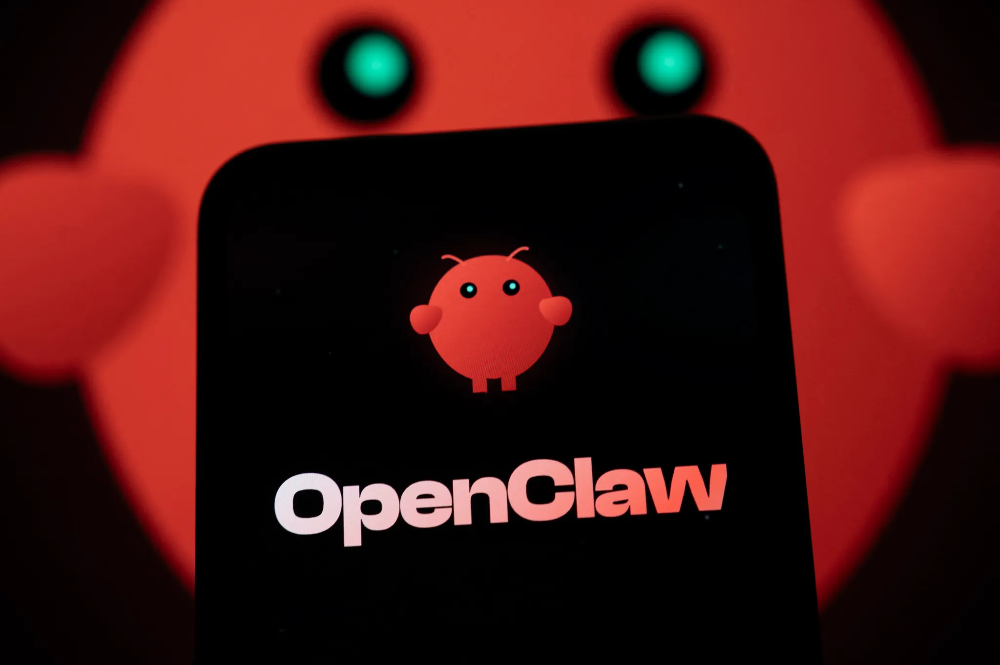

Veille récenteDivin Kimia · Portfolio
Veille · IA & agents
OpenClaw — automatisation & veille IA
Parcours e-learning : contexte, enjeux et ressources pour suivre cette veille structurée.
Parcours
Veille